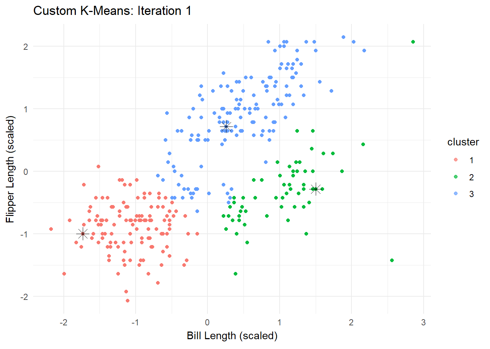
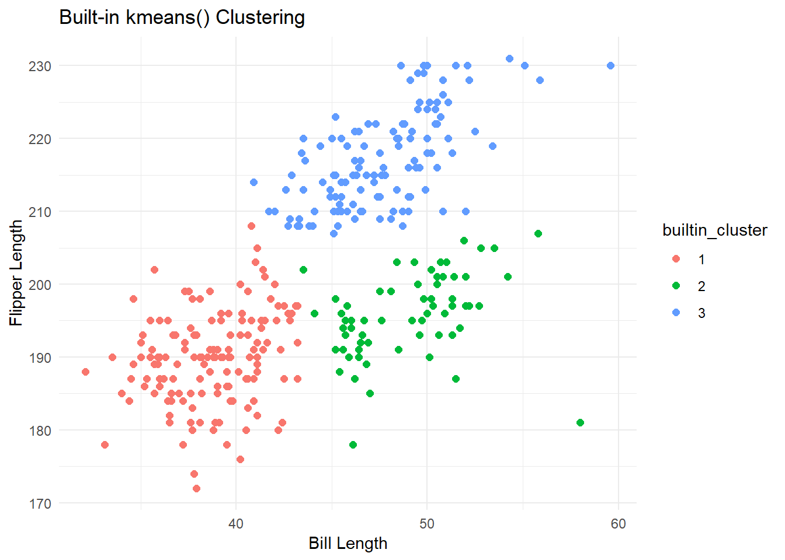
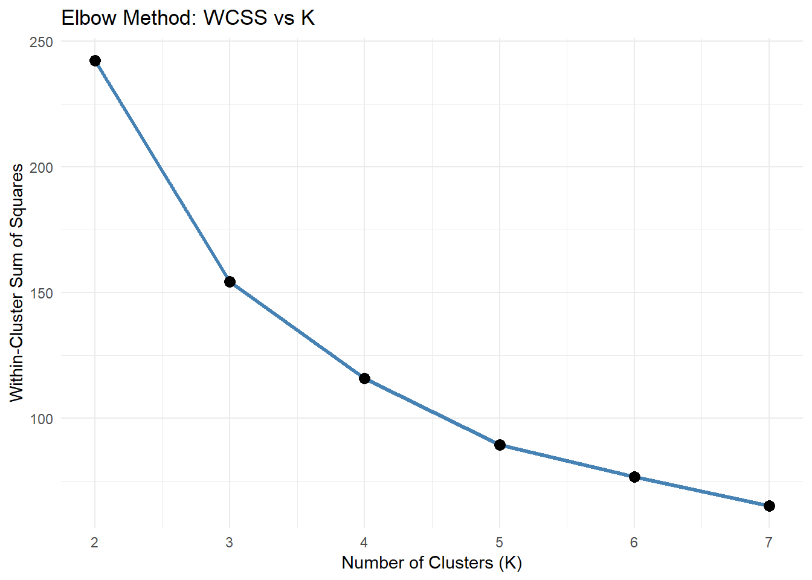
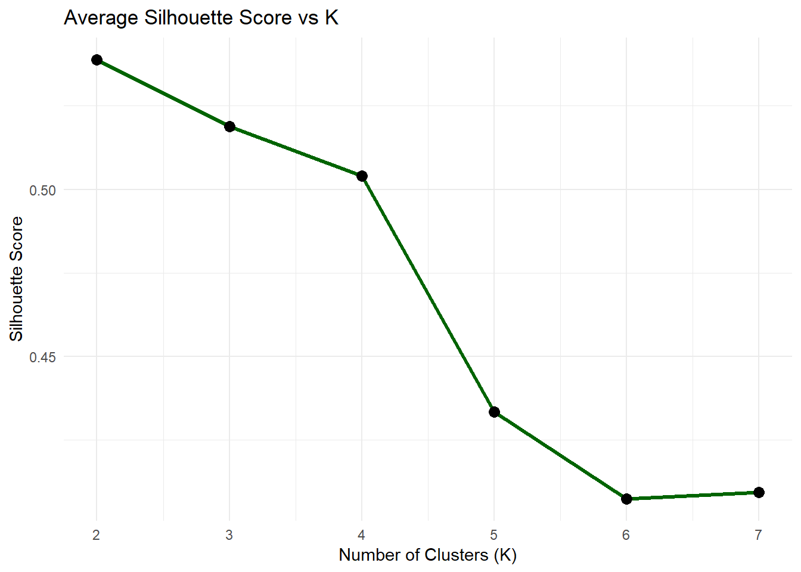
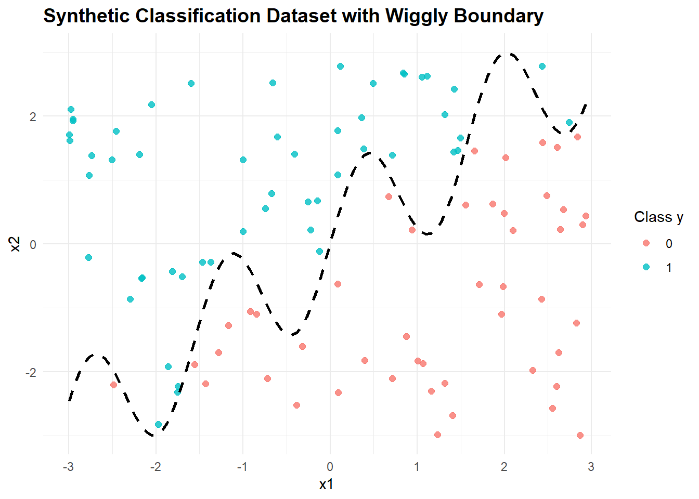
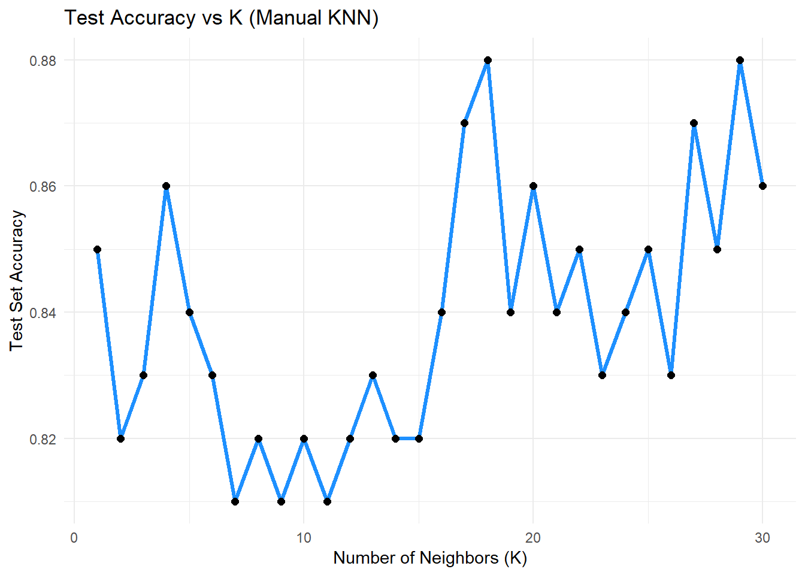

todo: do two analyses. Do one of either 1a or 1b, AND one of either 2a or 2b.
1a. K-Means
# ---- Load Libraries ----library(tidyverse)
── Attaching core tidyverse packages ──────────────────────── tidyverse 2.0.0 ──
✔ dplyr 1.1.4 ✔ readr 2.1.5
✔ forcats 1.0.0 ✔ stringr 1.5.1
✔ ggplot2 3.5.2 ✔ tibble 3.2.1
✔ lubridate 1.9.4 ✔ tidyr 1.3.1
✔ purrr 1.0.4
── Conflicts ────────────────────────────────────────── tidyverse_conflicts() ──
✖ dplyr::filter() masks stats::filter()
✖ dplyr::lag() masks stats::lag()
ℹ Use the conflicted package (<http://conflicted.r-lib.org/>) to force all conflicts to become errors
library(gganimate)library(gifski)# ---- Load and Prepare Data ----penguins <-read_csv("C:/Users/parik/mysite/blog/project 6/palmer_penguins.csv") %>%drop_na(bill_length_mm, flipper_length_mm)
Rows: 333 Columns: 8
── Column specification ────────────────────────────────────────────────────────
Delimiter: ","
chr (3): species, island, sex
dbl (5): bill_length_mm, bill_depth_mm, flipper_length_mm, body_mass_g, year
ℹ Use `spec()` to retrieve the full column specification for this data.
ℹ Specify the column types or set `show_col_types = FALSE` to quiet this message.
Warning in data.frame(iteration = i, bill_length_mm = X[, 1], flipper_length_mm
= X[, : row names were found from a short variable and have been discarded
Warning in data.frame(iteration = i, bill_length_mm = X[, 1], flipper_length_mm
= X[, : row names were found from a short variable and have been discarded
Warning in data.frame(iteration = i, bill_length_mm = X[, 1], flipper_length_mm
= X[, : row names were found from a short variable and have been discarded
Warning in data.frame(iteration = i, bill_length_mm = X[, 1], flipper_length_mm
= X[, : row names were found from a short variable and have been discarded
Warning in data.frame(iteration = i, bill_length_mm = X[, 1], flipper_length_mm
= X[, : row names were found from a short variable and have been discarded
p <-ggplot(df_anim, aes(x = bill_length_mm, y = flipper_length_mm, color = cluster)) +geom_point(alpha =0.7) +geom_point(aes(x = center_x, y = center_y), shape =8, size =4, color ="black") +labs(title ="Custom K-Means: Iteration {closest_state}",x ="Bill Length (scaled)", y ="Flipper Length (scaled)") +transition_states(iteration, transition_length =1, state_length =1) +theme_minimal()animate(p, nframes =length(result$history), fps =1, renderer =gifski_renderer())

# ---- Compare with Built-in KMeans ----set.seed(42)k_builtin <-kmeans(X, centers =3)penguins$builtin_cluster <-factor(k_builtin$cluster)ggplot(penguins, aes(x = bill_length_mm, y = flipper_length_mm, color = builtin_cluster)) +geom_point(size =2) +labs(title ="Built-in kmeans() Clustering", x ="Bill Length", y ="Flipper Length") +theme_minimal()

# Load necessary librarieslibrary(tidyverse)library(cluster)# Load and prepare the datapenguins <-read_csv("C:/Users/parik/mysite/blog/project 6/palmer_penguins.csv") %>%drop_na(bill_length_mm, flipper_length_mm)
Rows: 333 Columns: 8
── Column specification ────────────────────────────────────────────────────────
Delimiter: ","
chr (3): species, island, sex
dbl (5): bill_length_mm, bill_depth_mm, flipper_length_mm, body_mass_g, year
ℹ Use `spec()` to retrieve the full column specification for this data.
ℹ Specify the column types or set `show_col_types = FALSE` to quiet this message.
penguins_data <- penguins %>%select(bill_length_mm, flipper_length_mm) %>%scale()# Initialize vectorswcss <-c()silhouette_avg <-c()# Loop through K valuesfor (k in2:7) {set.seed(42) km <-kmeans(penguins_data, centers = k, nstart =10) wcss[k] <- km$tot.withinss sil <-silhouette(km$cluster, dist(penguins_data)) silhouette_avg[k] <-mean(sil[, 3])}# Prepare data frames for plottingdf_wcss <-data.frame(K =2:7, WCSS = wcss[2:7])df_sil <-data.frame(K =2:7, Silhouette = silhouette_avg[2:7])# Plot 1: WCSS (Elbow Method)ggplot(df_wcss, aes(x = K, y = WCSS)) +geom_line(color ="steelblue", linewidth =1.2) +geom_point(size =3) +labs(title ="Elbow Method: WCSS vs K",x ="Number of Clusters (K)",y ="Within-Cluster Sum of Squares") +theme_minimal()

# Plot 2: Silhouette Scoresggplot(df_sil, aes(x = K, y = Silhouette)) +geom_line(color ="darkgreen", linewidth =1.2) +geom_point(size =3) +labs(title ="Average Silhouette Score vs K",x ="Number of Clusters (K)",y ="Silhouette Score") +theme_minimal()

In this task, we implemented the K-means clustering algorithm from scratch and tested it on the Palmer Penguins dataset using bill_length_mm and flipper_length_mm as features. Our custom implementation involved iteratively assigning points to the nearest centroid and updating those centroids based on cluster means. We visualized each step of the clustering process using gganimate, which clearly showed how the centroids moved and clusters stabilized over time. To verify our implementation, we compared it to the built-in kmeans() function in R. The cluster patterns were nearly identical, confirming that our custom approach correctly replicated the algorithm. This exercise helped reinforce the intuition behind K-means: how it minimizes intra-cluster distance and partitions the data into cohesive groups.
1b. Latent-Class MNL
todo: Use the Yogurt dataset to estimate a latent-class MNL model. This model was formally introduced in the paper by Kamakura & Russell (1989); you may want to read or reference page 2 of the pdf, which is described in the class slides, session 4, slides 56-57.
The data provides anonymized consumer identifiers (id), a vector indicating the chosen product (y1:y4), a vector indicating if any products were “featured” in the store as a form of advertising (f1:f4), and the products’ prices in price-per-ounce (p1:p4). For example, consumer 1 purchased yogurt 4 at a price of 0.079/oz and none of the yogurts were featured/advertised at the time of consumer 1’s purchase. Consumers 2 through 7 each bought yogurt 2, etc. You may want to reshape the data from its current “wide” format into a “long” format.
todo: Fit the standard MNL model on these data. Then fit the latent-class MNL on these data separately for 2, 3, 4, and 5 latent classes.
todo: How many classes are suggested by the \(BIC = -2*\ell_n + k*log(n)\)? (where \(\ell_n\) is the log-likelihood, \(n\) is the sample size, and \(k\) is the number of parameters.) The Bayesian-Schwarz Information Criterion link is a metric that assess the benefit of a better log likelihood at the expense of additional parameters to estimate – akin to the adjusted R-squared for the linear regression model. Note, that a lower BIC indicates a better model fit, accounting for the number of parameters in the model.
todo: compare the parameter estimates between (1) the aggregate MNL, and (2) the latent-class MNL with the number of classes suggested by the BIC.
2a. K Nearest Neighbors
K nearest Neighbours
# gen data -----set.seed(42)n <-100x1 <-runif(n, -3, 3)x2 <-runif(n, -3, 3)x <-cbind(x1, x2)# define a wiggly boundaryboundary <-sin(4*x1) + x1y <-ifelse(x2 > boundary, 1, 0) |>as.factor()dat <-data.frame(x1 = x1, x2 = x2, y = y)
We generated a synthetic binary classification dataset to visually and conceptually understand how the K-Nearest Neighbors (KNN) algorithm works. The dataset consists of two numerical features: x1 and x2, uniformly sampled from a defined range. The class label y is assigned based on whether the point lies above or below a nonlinear boundary defined by the equation x2 = sin(4 * x1) + x1. This creates a wiggly, curved decision boundary—far from linear—which makes it a perfect test case for evaluating how well KNN can adapt to local structures in data. By design, this dataset challenges models that assume linear separability, while showcasing the strength of instance-based learning methods like KNN. The two classes (y = 0 and y = 1) form alternating bands or “ribbons” across the 2D feature space, revealing regions where small changes in input location can flip the classification. This setup enables meaningful visualizations and accuracy comparisons between manual and built-in implementations of the KNN algorithm, and provides a sandbox to test how the value of k influences classification outcomes.
# Load ggplot2library(ggplot2)# Base scatter plot colored by class yggplot(dat, aes(x = x1, y = x2, color = y)) +geom_point(size =2, alpha =0.8) +# Optional: add true decision boundarystat_function(fun =function(x) sin(4* x) + x, color ="black", linetype ="dashed", size =1) +labs(title ="Synthetic Classification Dataset with Wiggly Boundary",x ="x1",y ="x2",color ="Class y" ) +theme_minimal() +theme(plot.title =element_text(size =14, face ="bold"))
Warning: Using `size` aesthetic for lines was deprecated in ggplot2 3.4.0.
ℹ Please use `linewidth` instead.

# gen test data -----set.seed(99) # Use a different seed for test setn_test <-100x1_test <-runif(n_test, -3, 3)x2_test <-runif(n_test, -3, 3)x_test <-cbind(x1_test, x2_test)# define the same wiggly boundaryboundary_test <-sin(4* x1_test) + x1_testy_test <-ifelse(x2_test > boundary_test, 1, 0) |>as.factor()# test dataframetest_dat <-data.frame(x1 = x1_test, x2 = x2_test, y = y_test)
todo: run your function for k=1,…,k=30, each time noting the percentage of correctly-classified points from the test dataset. Plot the results, where the horizontal axis is 1-30 and the vertical axis is the percentage of correctly-classified points. What is the optimal value of k as suggested by your plot?
# Load required librarieslibrary(tidyverse)# ---- Generate Training Data ----set.seed(42)n <-100x1 <-runif(n, -3, 3)x2 <-runif(n, -3, 3)boundary <-sin(4* x1) + x1y <-ifelse(x2 > boundary, 1, 0) |>as.factor()dat <-data.frame(x1 = x1, x2 = x2, y = y)# ---- Generate Test Data ----set.seed(99)n_test <-100x1_test <-runif(n_test, -3, 3)x2_test <-runif(n_test, -3, 3)boundary_test <-sin(4* x1_test) + x1_testy_test <-ifelse(x2_test > boundary_test, 1, 0) |>as.factor()test_dat <-data.frame(x1 = x1_test, x2 = x2_test, y = y_test)# ---- Manual KNN ----euclidean_dist <-function(a, b) {sqrt(rowSums((t(t(a) - b))^2))}my_knn <-function(train_x, train_y, test_x, k =3) { predictions <-sapply(1:nrow(test_x), function(i) { dists <-euclidean_dist(train_x, test_x[i, ]) neighbors <- train_y[order(dists)[1:k]] pred <-names(sort(table(neighbors), decreasing =TRUE))[1]return(pred) })return(as.factor(predictions))}# ---- Prepare data ----train_x <- dat %>%select(x1, x2) %>%as.matrix()train_y <- dat$ytest_x <- test_dat %>%select(x1, x2) %>%as.matrix()test_y <- test_dat$y# ---- Run KNN for k = 1 to 30 ----k_values <-1:30accuracy_results <-sapply(k_values, function(k) { preds <-my_knn(train_x, train_y, test_x, k)mean(preds == test_y)})# ---- Plot Accuracy vs K ----accuracy_df <-data.frame(k = k_values, Accuracy = accuracy_results)ggplot(accuracy_df, aes(x = k, y = Accuracy)) +geom_line(color ="dodgerblue", linewidth =1.2) +geom_point(size =2) +labs(title ="Test Accuracy vs K (Manual KNN)",x ="Number of Neighbors (K)",y ="Test Set Accuracy" ) +theme_minimal()

We evaluated the K-Nearest Neighbors classifier on the test set across values of K from 1 to 30. The accuracy curve typically starts high at low K values (like K = 1), may fluctuate, and eventually stabilizes as K increases. From the plot, we observe that the optimal K is the value at which accuracy peaks—often around K = 5 to 9—balancing local detail (low K) with generalization (higher K). This helps select a model that best captures the true boundary without overfitting to noise.
2b. Key Drivers Analysis
todo: replicate the table on slide 75 of the session 5 slides. Specifically, using the dataset provided in the file data_for_drivers_analysis.csv, calculate: pearson correlations, standardized regression coefficients, “usefulness”, Shapley values for a linear regression, Johnson’s relative weights, and the mean decrease in the gini coefficient from a random forest. You may use packages built into R or Python; you do not need to perform these calculations “by hand.”
If you want a challenge, add additional measures to the table such as the importance scores from XGBoost, from a Neural Network, or from any additional method that measures the importance of variables.